Como fazer chocolate quente elegante
Uma jornada sensorial pela arte de preparar a bebida mais aconchegante do mundo
Em um mundo onde a gastronomia se reinventa constantemente, o chocolate quente permanece como um símbolo atemporal de conforto e sofisticação. Esta bebida, que atravessa séculos de história e culturas, encontra-se hoje em um momento de redescoberta, onde técnicas tradicionais se fundem com abordagens inovadoras e ingredientes surpreendentes.
Nas próximas páginas, mergulharemos em uma jornada sensorial que transcende a simplicidade aparente desta bebida amada mundialmente. Exploraremos não apenas receitas extraordinárias, mas também a arte da apresentação, a ciência por trás do preparo perfeito e os segredos que transformam um simples chocolate quente em uma experiência gastronômica memorável.

História do Chocolate Quente: Da Tradição à Modernidade
O chocolate quente, em sua essência, é uma bebida que carrega séculos de história. Desde as antigas civilizações mesoamericanas, que consumiam uma versão amarga e espessa do chocolate, até as sofisticadas receitas europeias que conhecemos hoje, essa bebida sempre foi um símbolo de status, poder e, acima de tudo, de prazer.
No Brasil, o chocolate quente chegou com os colonizadores e rapidamente se espalhou pelas classes sociais, tornando-se uma bebida popular em todo o país. Com o tempo, cada região foi adaptando a receita às suas particularidades, incorporando ingredientes locais e criando variações únicas.
Hoje, o chocolate quente vive um renascimento, sendo reinterpretado por chefs e baristas que exploram novas possibilidades de sabor, textura e apresentação. Esta seção é uma homenagem a essa rica história e uma introdução às tendências contemporâneas que estão moldando o futuro do chocolate quente.

Os Ingredientes do Chocolate Quente: Qualidade e Sabor
A magia do chocolate quente reside, em grande parte, na qualidade dos ingredientes utilizados em sua preparação. Nesta seção, exploraremos os principais componentes do chocolate quente e como sua escolha pode elevar ou arruinar sua bebida.
Chocolate: O Coração da Bebida
O chocolate é, sem dúvida, o ingrediente mais importante do chocolate quente. Sua qualidade, teor de cacau e origem fazem toda a diferença no sabor final da bebida. Chocolates com alto teor de cacau (acima de 70%) são os mais indicados, pois proporcionam um sabor mais intenso e menos doce.
Leite: A Base Cremosa
O leite é responsável pela cremosidade e pelo equilíbrio do sabor do chocolate quente. Leites integrais ou com alto teor de gordura são os mais indicados para uma bebida mais rica e aveludada. Para uma opção vegana, leites à base de plantas, como o leite de amêndoas ou de coco, podem ser utilizados.
Açúcar e Outros Adoçantes
A quantidade de açúcar no chocolate quente é uma questão de gosto pessoal, mas é importante lembrar que o chocolate já contém açúcar em sua composição. Portanto, adicione adoçantes com moderação, para não mascarar o sabor do chocolate.
Ingredientes Adicionais: Especiarias e Aromatizantes
Canela, cardamomo, baunilha e até pimenta são exemplos de ingredientes que podem ser adicionados ao chocolate quente para realçar seu sabor e torná-lo ainda mais especial.
Os Tipos de Chocolate: Uma Análise Detalhada
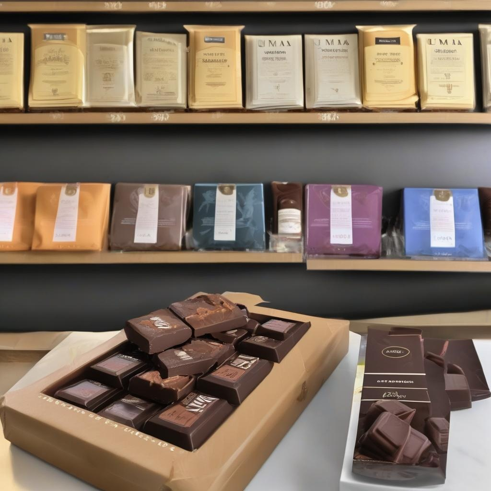
A escolha do chocolate é fundamental para criar uma bebida excepcional. Cada tipo oferece características únicas:
- Chocolate em Barra (70% ou mais): Oferece profundidade de sabor e textura aveludada
- Chocolate em Pó: Ideal para criar uma base consistente e controlar a densidade
- Nibs de Cacau: Adiciona complexidade e notas terrosas
- Pastilhas de Chocolate: Derretem uniformemente, garantindo consistência
A combinação de diferentes tipos de chocolate pode criar camadas de sabor surpreendentes. Por exemplo, uma base de chocolate em pó de alta qualidade complementada com chocolate 70% derretido resulta em uma bebida complexa e equilibrada.
Equipamentos e Utensílios: O Que Você Vai Precisar
Para preparar um chocolate quente de qualidade, é fundamental contar com os equipamentos e utensílios adequados. Nesta seção, listamos o que você vai precisar ter em sua cozinha.
Panelas e Utensílios de Cozinha
Uma boa panela de fundo grosso é essencial para derreter o chocolate de maneira uniforme e evitar queimar. Colheres de pau ou silicone são ideais para mexer a mistura, evitando arranhar o fundo da panela.
Batedores e Fouets
Para aqueles que desejam um chocolate quente com espuma densa e cremosa, um batedor manual ou um fouet são ferramentas indispensáveis. Eles ajudam a incorporar ar na mistura, resultando em uma bebida mais leve e aerada.
Termômetro de Cozinha
Um termômetro é útil para garantir que o leite não ferva e que o chocolate derreta na temperatura ideal, preservando assim suas propriedades e sabor.
Canecas e Xícaras
A escolha da caneca ou xícara também é importante. Opte por recipientes que mantenham a temperatura da bebida por mais tempo, como os de cerâmica ou vidro duplo.
Técnicas de Preparo: Do Básico ao Avançado
Preparar um chocolate quente pode parecer uma tarefa simples, mas existem técnicas que podem elevar sua bebida a um novo patamar. Nesta seção, vamos desde o preparo básico até técnicas mais avançadas.
Preparo Básico
O preparo básico do chocolate quente envolve derreter o chocolate na temperatura ideal, aquecer o leite separadamente e misturar ambos até obter uma mistura homogênea. Adoce a gosto e sirva.
Emulsificação: O Segredo da Cremosa Perfeita
A emulsificação é uma técnica que consiste em misturar dois líquidos que normalmente não se misturam, como água e óleo. No caso do chocolate quente, essa técnica ajuda a incorporar a gordura do chocolate com o leite, resultando em uma bebida mais cremosa e com melhor textura.
Texturização: Criando Espumas e Sabores
A texturização é uma técnica que envolve a incorporação de ar na bebida, criando uma espuma leve e cremosa. Isso pode ser feito com o uso de batedores manuais, fouets ou até mesmo máquinas de café expresso com vaporizador.
Decoração e Apresentação
A apresentação do chocolate quente é uma parte importante da experiência gastronômica. Use sua criatividade para decorar sua bebida com chantilly, raspas de chocolate, canela em pó ou até mesmo flores comestíveis.
Técnicas Avançadas de Preparo

O Método da Infusão Lenta
Uma das técnicas mais refinadas para preparar chocolate quente é o método da infusão lenta. Este processo, que pode levar até 20 minutos, permite que os sabores se desenvolvam completamente e que as texturas se integrem de maneira perfeita. A chave está no controle preciso da temperatura e na agitação constante e gentil.
A Importância da Temperatura
O controle da temperatura é crucial para um chocolate quente excepcional. A água ou leite deve ser aquecido entre 85°C e 90°C - quente o suficiente para derreter o chocolate completamente, mas não tanto a ponto de queimá-lo. Use um termômetro de cozinha para maior precisão.
Ingredientes Disruptivos e Combinações Inesperadas
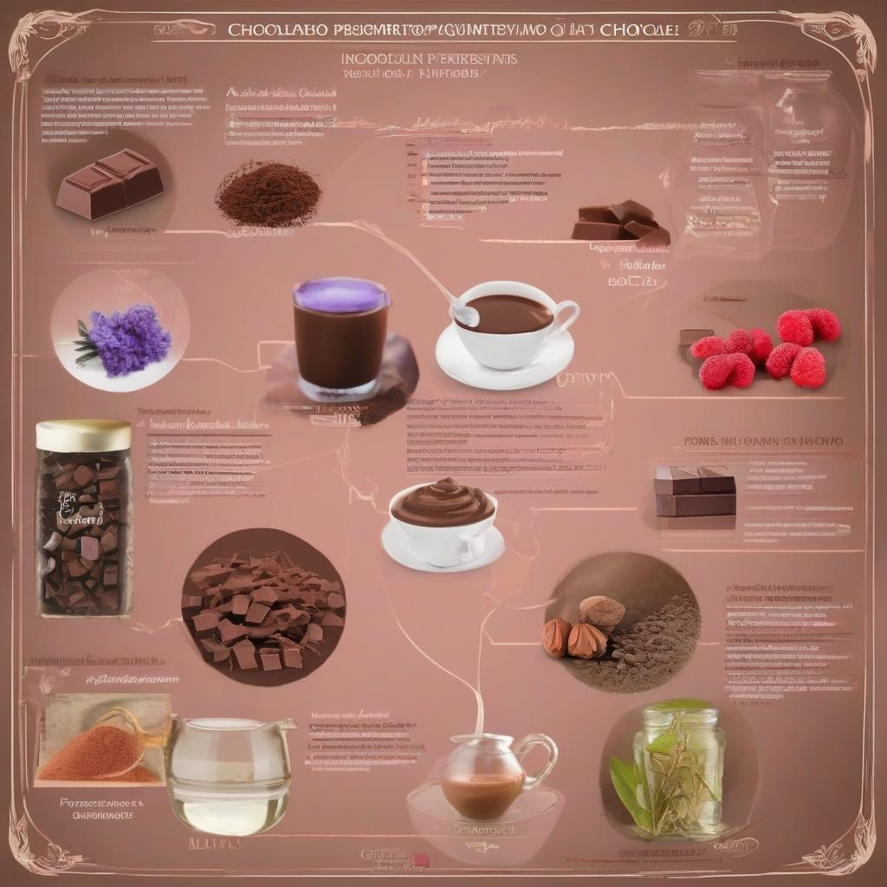
A verdadeira inovação no preparo do chocolate quente contemporâneo está na inclusão de ingredientes inesperados que elevam a bebida a novos patamares de sofisticação. Algumas combinações surpreendentes incluem:
- Flor de sal e caramelo defumado
- Lavanda e baunilha tahitiana
- Pimenta rosa e cardamomo
- Chá matcha e chocolate branco
- Figo caramelizado e tomilho
A chave para o sucesso com ingredientes disruptivos está no equilíbrio. Cada elemento deve complementar, nunca dominar, o sabor fundamental do chocolate.
"O verdadeiro chocolate quente é uma obra de arte líquida, onde cada ingrediente conta uma história e cada xícara é uma experiência única a ser saboreada lentamente."
A Arte da Apresentação
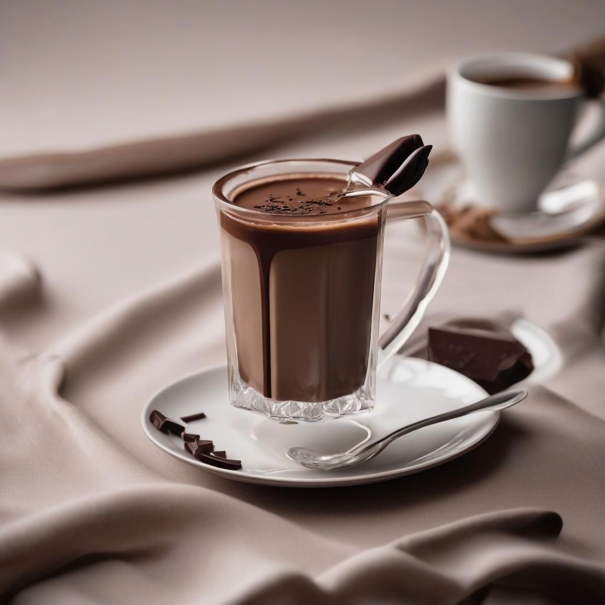
Elementos de Apresentação
A apresentação visual é tão importante quanto o sabor. Alguns elementos essenciais para uma apresentação memorável:
- Xícaras e taças apropriadas para cada estilo de serviço
- Técnicas de latte art adaptadas para chocolate
- Complementos visuais como flores comestíveis e especiarias
- Harmonização com petit fours e acompanhamentos
Receitas Clássicas de Chocolate Quente
Nesta seção, apresentamos algumas receitas clássicas de chocolate quente que são verdadeiros ícones da gastronomia. Cada receita é acompanhada de uma breve história e dicas para o preparo perfeito.
Chocolate Quente Francês
Uma receita rica e cremosa, feita com chocolate amargo, leite integral e um toque de baunilha. Servido tradicionalmente em bistrôs parisienses, é a bebida perfeita para aquecer os dias frios.
Chocolate Quente Mexicano
Com um sabor intenso e especiarias marcantes, este chocolate quente é feito com chocolate meio amargo, leite, canela e uma pitada de pimenta caiena. Uma verdadeira explosão de sabores!
Chocolate Quente Belga
Reconhecido mundialmente pela sua qualidade, o chocolate quente belga é feito com chocolate ao leite de alta qualidade, creme de leite e um toque de licor de chocolate. Uma experiência indulgente e sofisticada.
Inovações e Tendências: O Futuro do Chocolate Quente
O chocolate quente é uma bebida em constante evolução. Nesta seção, exploramos as inovações e tendências que estão moldando o futuro do chocolate quente.
Chocolate Quente Vegano
Com o aumento da demanda por opções veganas, muitas receitas de chocolate quente estão sendo adaptadas para atender a esse público. Leites vegetais, chocolates sem leite e adoçantes naturais são algumas das inovações nesse segmento.
Chocolate Quente Funcional
Outra tendência em alta são os chocolates quentes funcionais, que além de saborosos, trazem benefícios à saúde. Ingredientes como cúrcuma, gengibre e pimenta são adicionados às receitas tradicionais, criando bebidas nutritivas e reconfortantes.
Experiências Personalizadas
O futuro do chocolate quente também passa pela personalização. Cada vez mais, os consumidores buscam experiências únicas e sob medida, que atendam às suas preferências e necessidades individuais.
"O chocolate quente é uma bebida que transcende o tempo e o espaço. É um abraço quentinho em forma de líquido, uma explosão de sabores que desperta os sentidos e aquece a alma." — Autor Desconhecido
Conclusão
O chocolate quente é mais do que uma simples bebida; é uma experiência sensorial completa que envolve história, cultura, técnica e, acima de tudo, paixão. Esperamos que este artigo tenha inspirado você a explorar o maravilhoso mundo do chocolate quente e a se aventurar na criação de suas próprias receitas e experiências.
Aspectos Culturais e Históricos do Chocolate Quente
O chocolate quente não é apenas uma bebida, mas um elemento cultural que atravessa séculos e continentes. Desde os astecas e maias, que consideravam o cacau um presente dos deuses, até as sofisticadas chocolaterias europeias, cada cultura desenvolveu sua própria interpretação desta bebida singular.
As Origens Mesoamericanas
As civilizações pré-colombianas preparavam o chocolate de uma forma muito diferente da que conhecemos hoje:
- Bebida fria e amarga, sem adição de açúcar
- Mistura com especiarias como pimenta e baunilha
- Uso do molinillo para criar espuma
- Considerado bebida sagrada e medicinal
- Reservado para nobres e guerreiros
- Grãos de cacau usados como moeda
Esta tradição milenar influencia até hoje o preparo de bebidas como o chocolate quente mexicano, que mantém elementos das receitas ancestrais.
A Revolução Europeia
Quando o chocolate chegou à Europa, sofreu uma transformação radical:
- Adição de açúcar e leite
- Desenvolvimento de técnicas de processamento
- Criação das primeiras chocolaterias
- Surgimento de variações regionais
- Democratização do consumo
Técnicas Avançadas de Preparo
Controle de Temperatura
A temperatura é um elemento crucial no preparo do chocolate quente perfeito. Cada tipo de chocolate tem sua temperatura ideal de derretimento e serviço:
- Chocolate amargo: 45-50°C
- Chocolate ao leite: 40-45°C
- Chocolate branco: 35-40°C
Texturas e Consistências
A textura perfeita é alcançada através de técnicas específicas:
- Emulsificação correta dos ingredientes
- Aeração controlada
- Balanço entre líquidos e sólidos
- Controle da velocidade de dissolução
Equipamentos Especializados
Para resultados profissionais, alguns equipamentos são essenciais:
- Termômetro de precisão
- Batedores específicos
- Panelas de fundo duplo
- Recipientes para banho-maria
Harmonização e Experiência Sensorial
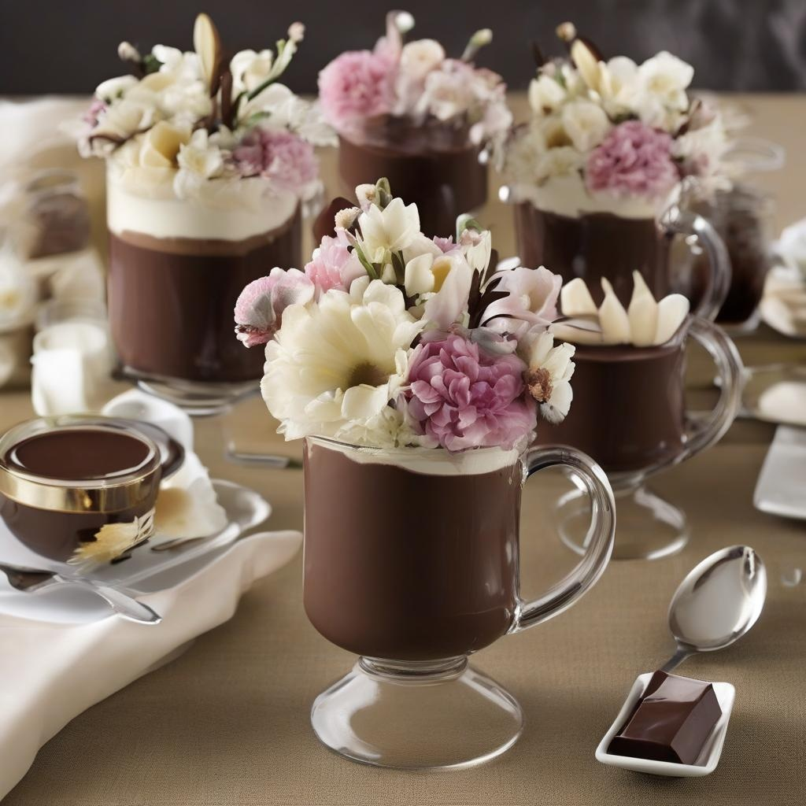
A Arte do Pairing
A harmonização perfeita pode elevar a experiência do chocolate quente a novos patamares. Considere estas combinações refinadas:
- Chocolate amargo (85%) com frutas vermelhas confitadas
- Chocolate com leite e especiarias com biscoitos de amêndoas
- Chocolate branco aromatizado com macarons de lavanda
- Chocolate meio amargo com financiers de pistache
Criando uma Experiência Multissensorial
O verdadeiro prazer do chocolate quente vai além do paladar. Considere todos os sentidos ao criar sua experiência:
- Visual: Apresentação impecável e contraste de cores
- Olfativo: Aromas complementares e especiarias
- Tátil: Temperatura ideal e texturas variadas
- Auditivo: O som suave do chocolate sendo vertido
Variações Sazonais e Temáticas
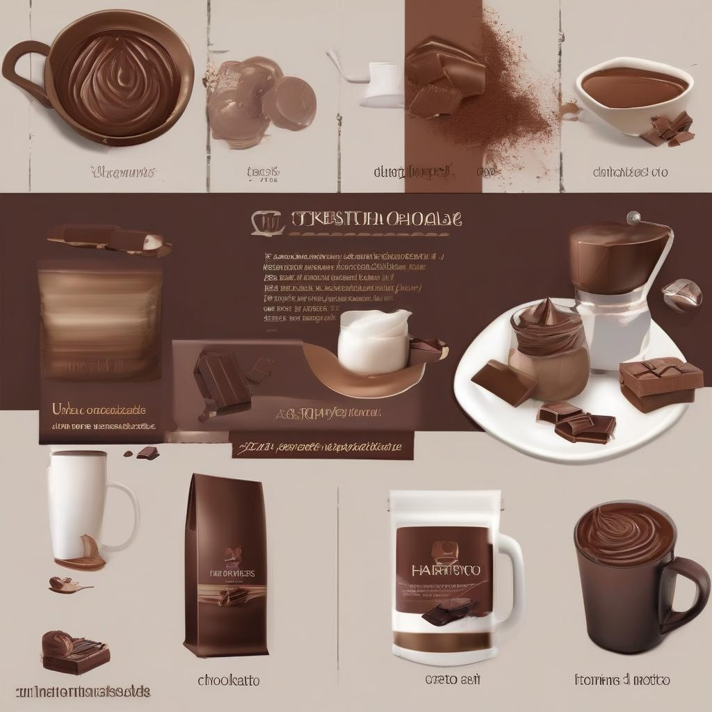
Primavera
Incorpore elementos florais e notas cítricas:
- Flores de laranjeira e chocolate branco
- Pétalas de rosa cristalizadas
- Raspas de limão siciliano
Verão
Versões refrescantes e leves:
- Chocolate gelado com hortelã fresca
- Ganache aerada com frutas vermelhas
- Chocolate com água de coco e especiarias
Outono
Sabores reconfortantes e especiarias quentes:
- Chocolate com canela e maçã caramelizada
- Nozes tostadas e caramelo salgado
- Cardamomo e baunilha da Madagascar
Inverno
Versões mais densas e reconfortantes:
- Chocolate duplo com marshmallow artesanal
- Chocolate com laranja confitada e canela
- Ganache quente com pralinê de avelãs
"Cada xícara de chocolate quente é uma oportunidade de criar uma memória afetiva, uma pausa contemplativa em meio à agitação do dia a dia."
Receitas Premium de Chocolate Quente
Chocolate Quente Trufado
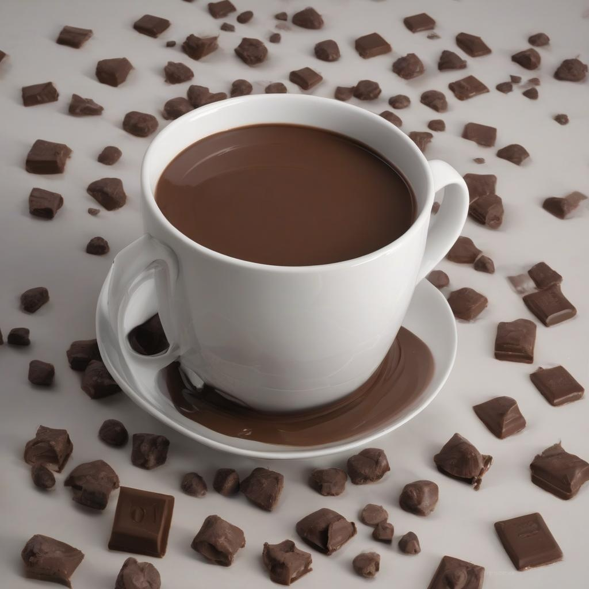
Uma versão indulgente que combina chocolate amargo de alta qualidade com creme de trufa negra:
- 200g de chocolate 70% cacau
- 500ml de leite integral
- 100ml de creme de leite fresco
- Raspas de trufa negra
- Pitada de flor de sal
Chocolate Quente dos Alpes
Inspirado nas chocolaterias suíças, com notas de caramelo e avelã:
- Chocolate ao leite suíço
- Pralinê de avelã
- Chantilly dos Alpes
- Calda de caramelo artesanal
Chocolate Quente Oriental
Uma fusão de tradições com especiarias exóticas:
- Chocolate amargo
- Cardamomo
- Açafrão
- Leite de coco
Benefícios do Chocolate para a Saúde
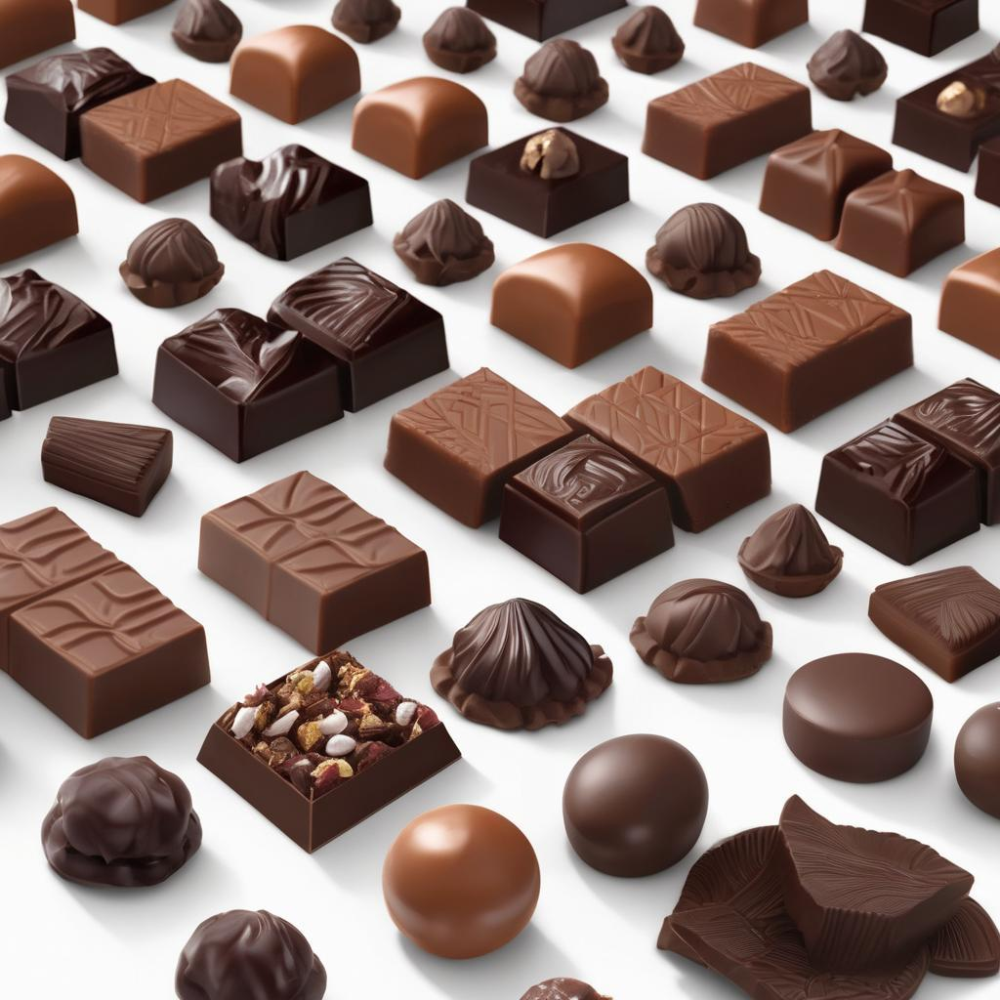
Propriedades Nutricionais
- Antioxidantes: Flavonoides e polifenóis
- Minerais: Magnésio, ferro e zinco
- Compostos Bioativos: Teobromina e cafeína
- Benefícios Cardiovasculares: Melhora da circulação
- Bem-estar Mental: Liberação de endorfinas
- Energia Sustentada: Combinação de nutrientes
Conclusão: A Arte do Chocolate Quente

O chocolate quente transcende sua natureza como bebida para se tornar uma experiência sensorial completa. É um convite à pausa, à contemplação e ao prazer consciente. Em cada xícara, encontramos não apenas sabor e aroma, mas também história, cultura e tradição.
A arte de preparar um chocolate quente excepcional reside não apenas nas técnicas e ingredientes escolhidos, mas também na atenção aos detalhes e no respeito pelo processo. É uma celebração do equilíbrio entre tradição e inovação, entre indulgência e consciência.
Que cada xícara de chocolate quente seja uma oportunidade de explorar novos sabores, de criar momentos especiais e de descobrir o prazer nas pequenas coisas da vida.
Problemas Comuns e Soluções
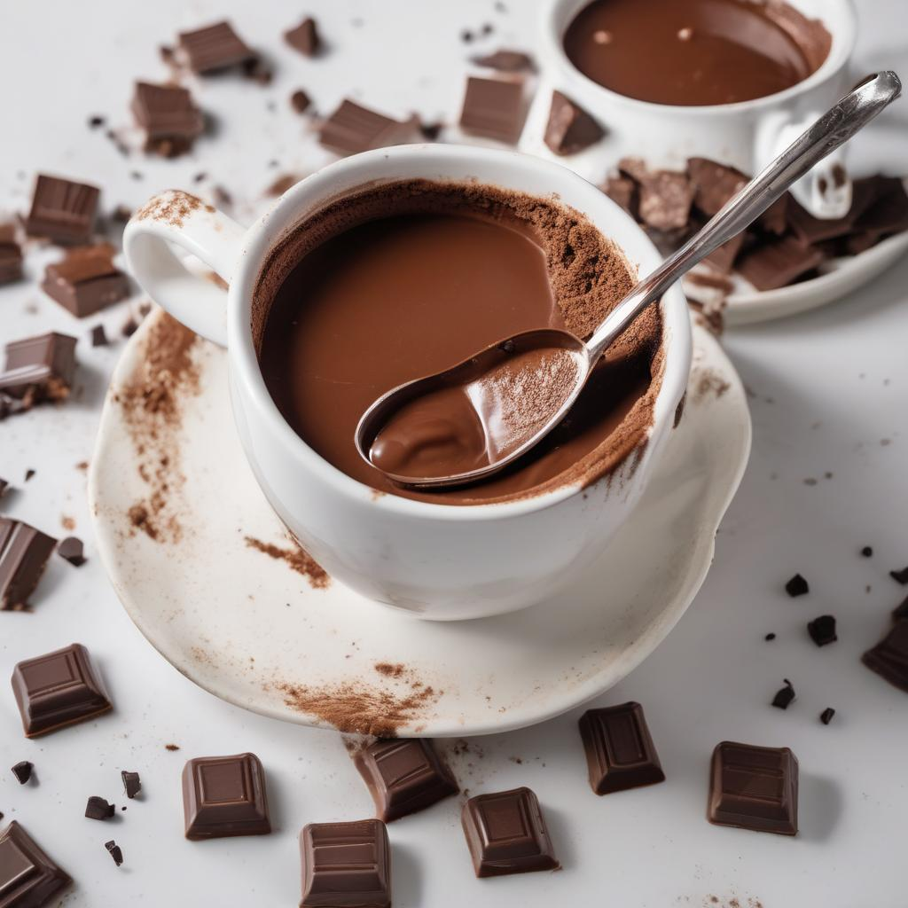
Chocolate Granulado
Um dos problemas mais comuns é o chocolate ficar granulado ou com textura arenosa. Isso geralmente acontece por:
- Temperatura muito alta durante o derretimento
- Contato com água ou umidade
- Mistura inadequada dos ingredientes
Solução:
Para recuperar um chocolate granulado:
- Adicione uma colher de óleo vegetal neutro morno
- Mexa suavemente em banho-maria
- Mantenha a temperatura controlada abaixo de 45°C
- Use um mixer de imersão em baixa velocidade
Chocolate Muito Espesso
Quando o chocolate quente fica muito espesso, pode ser devido a:
- Proporção incorreta de líquidos
- Excesso de amido ou espessantes
- Temperatura muito baixa
Solução:
Para ajustar a consistência:
- Adicione leite quente aos poucos, mexendo sempre
- Verifique a temperatura (manter entre 65-70°C)
- Evite adicionar mais espessantes
Técnicas Profissionais de Chocolateria
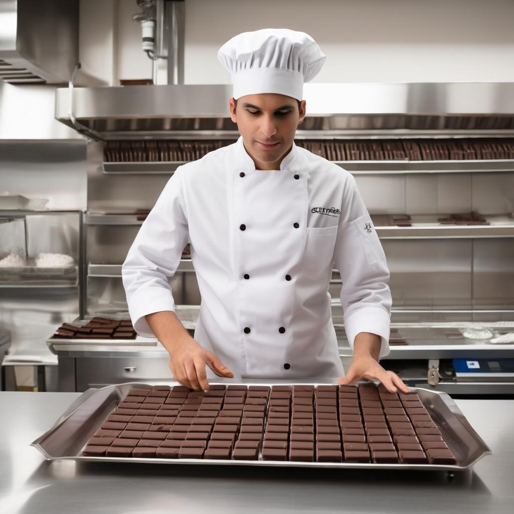
Temperagem do Chocolate
A temperagem é fundamental para chocolates de qualidade profissional:
- Derretimento preciso a 45°C
- Resfriamento controlado a 27°C
- Reaquecimento a 31-32°C
- Manutenção da temperatura de trabalho
Equipamentos Profissionais
Chocolaterias profissionais utilizam:
- Temperadeiras automáticas
- Termômetros infravermelhos
- Sistemas de banho-maria profissionais
- Refrigeradores com controle de umidade
Técnicas de Finalização
Para um acabamento profissional:
- Aeração controlada com nitrogênio
- Técnicas de latte art adaptadas
- Decorações com chocolate temperado
- Garnishes artísticos comestíveis
Chocolate Quente ao Redor do Mundo

América Latina
- México: Chocolate com canela e pimenta
- Brasil: Chocolate com leite condensado
- Colombia: Chocolate com queijo
- Argentina: Submarino (barra de chocolate derretida no leite)
Europa
- França: Chocolat chaud (denso e cremoso)
- Itália: Cioccolata calda (espesso como pudim)
- Espanha: Chocolate con churros
- Bélgica: Chocolate com pralinê
Ásia
- Japão: Chocolate quente matcha
- Índia: Chocolate com cardamomo e açafrão
- Tailândia: Chocolate com leite de coco
O Futuro do Chocolate Quente
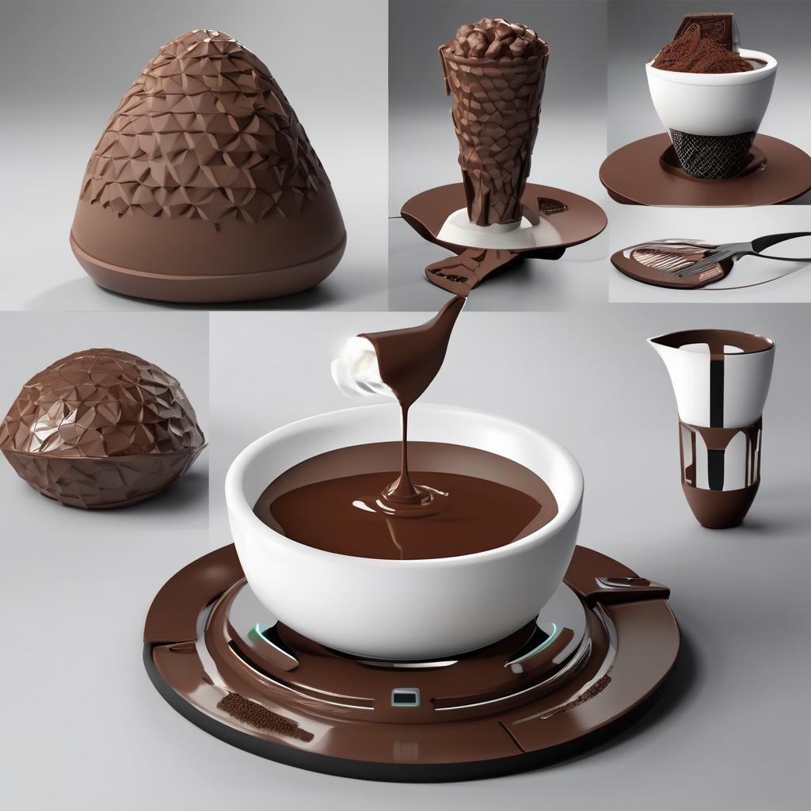
Inovações Tecnológicas
O futuro do chocolate quente está sendo moldado por:
- Impressão 3D de decorações em chocolate
- Máquinas com controle digital de temperatura
- Análise computadorizada de sabores
- Personalização através de inteligência artificial
Tendências Emergentes
- Chocolate quente molecular
- Versões funcionais com superalimentos
- Experiências multissensoriais imersivas
- Sustentabilidade e rastreabilidade
Perspectivas da Indústria
O mercado de chocolate quente está evoluindo com:
- Foco em ingredientes orgânicos e sustentáveis
- Demanda por experiências personalizadas
- Integração com tecnologias digitais
- Expansão do mercado premium
Aspectos Nutricionais e Saúde
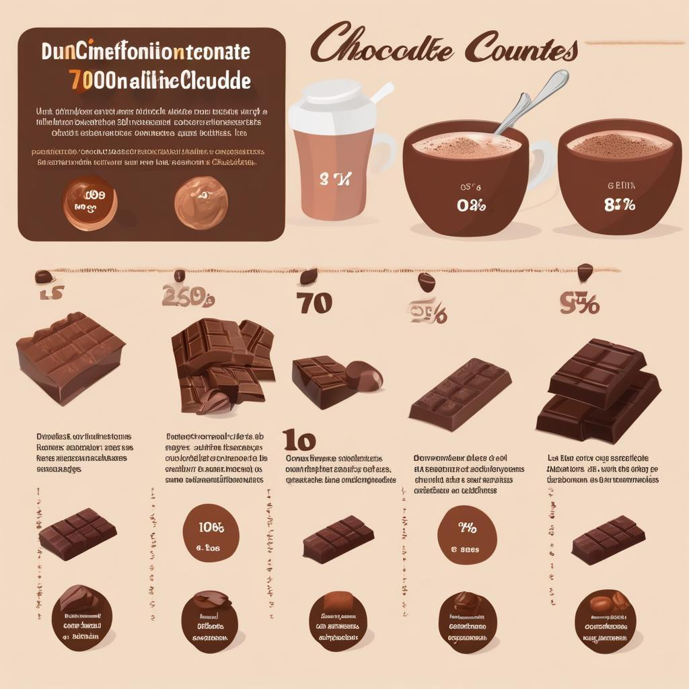
Valor Nutricional
Um chocolate quente tradicional (200ml) contém:
- Calorias: 200-300 kcal
- Proteínas: 8-10g
- Carboidratos: 25-30g
- Gorduras: 10-15g
- Fibras: 2-3g
Benefícios Comprovados
- Rico em antioxidantes
- Fonte de minerais essenciais
- Melhora do humor e bem-estar
- Benefícios cardiovasculares
- Propriedades anti-inflamatórias
Versões Mais Saudáveis
Opções para uma bebida mais nutritiva:
- Uso de chocolate 70% ou mais
- Leites vegetais fortificados
- Adoçantes naturais
- Adição de especiarias benéficas
Harmonização com Alimentos
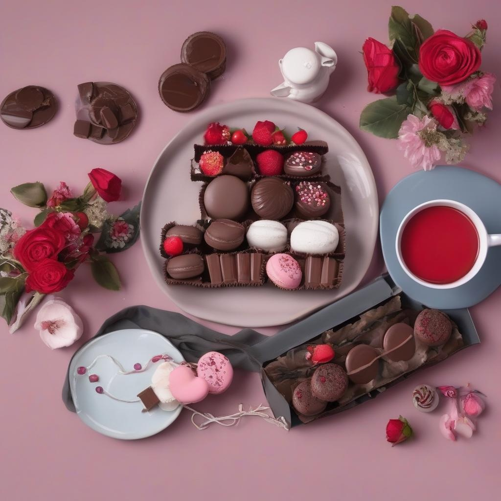
Harmonizações Clássicas
- Chocolate amargo:
- Frutas vermelhas frescas
- Nozes e amêndoas torradas
- Biscoitos amanteigados
- Chocolate ao leite:
- Croissants recém-assados
- Cookies de chocolate
- Bolos de especiarias
- Chocolate branco:
- Frutas cítricas
- Macarons delicados
- Biscoitos de lavanda
Harmonizações Contemporâneas
- Chocolate e queijos finos
- Combinações doce e salgado
- Frutas exóticas
- Especiarias inusitadas
Sustentabilidade e Origem do Chocolate
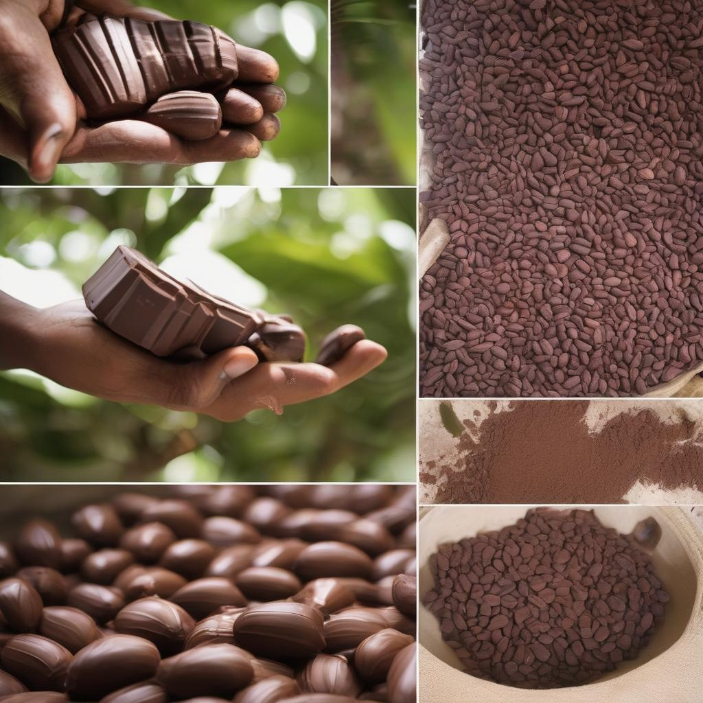
Produção Sustentável
Aspectos importantes da produção sustentável:
- Cultivo sombreado do cacau
- Preservação da biodiversidade
- Comércio justo
- Certificações orgânicas
Origem do Cacau
Principais regiões produtoras:
- Costa do Marfim
- Gana
- Equador
- Brasil
- Venezuela
Impacto Social
Contribuições para o desenvolvimento:
- Suporte a comunidades locais
- Educação e capacitação
- Desenvolvimento econômico
- Preservação cultural